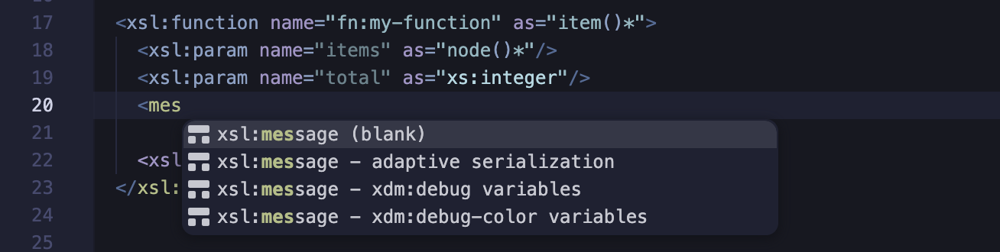
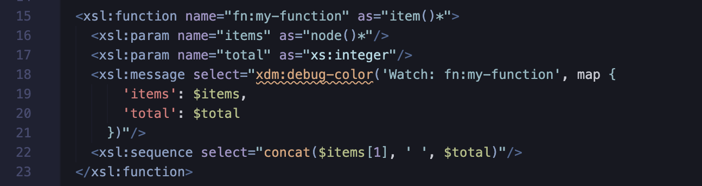
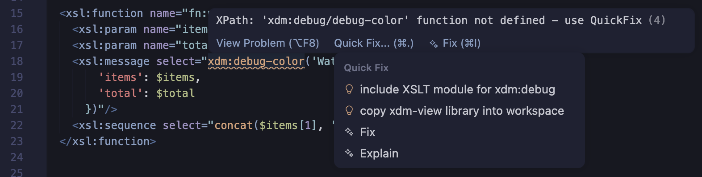
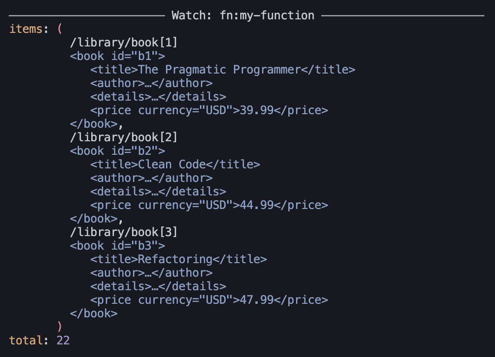

Debugging
There is no step-through debugger in the XSLT/XPath extension. When debugging XSLT, the xsl:message instruction can be used to send output to the terminal window. Diagnostics are added using the xdm:debug() function, from the xdm-viewer XSLT library, which renders one or more named in-scope variables to a formatted string for use in an xsl:message.
Diagnosing state of in-scope XSLT variables
There is special provision for conveniently reviewing the state of in-scope XSLT variables. This approach is outlined here.
1. Use Auto-complete for xsl:message
To assist with debugging, the XSLT editor has special auto-completion for the xsl:message instruction. Four completion items are offered when in-scope variables are found:
- (black) - inserts a simple placeholder, for entering your own xsl:message content
- adaptive serialization - serializes last declared variable using
serialize()with theadaptivemethod - xdm:debug variables - lists all in-scope variables in a single xdm:debug() call
- xdm:debug-color variables - as above, with ANSI-colored terminal output

2. Review Inserted xsl:message
When xdm:debug variables (or xdm:debug-color variables) is selected from the auto-complete list, an xsl:message snippet is inserted at the cursor with all in-scope variables collected into a single XPath map, passed as the second argument to xdm:debug(). A title, defaulting to the name of the enclosing xsl:function or the mode of an enclosing xsl:template, is inserted as the first argument.
<xsl:message select="xdm:debug('Watch: my-function', map {
'items': $items,
'total': $total
})"/>

xsl:message inserted with unresolved call to xdm:debug-color()3. Quick Fix: Include the xdm-view Library
As can be seen above, the xdm:debug() function is not initially resolvable - it will be marked
as a 'problem' until its defining library is included. Hover over the problem function and accept the
'QuickFix' by pressing Enter.
Two Quick Fix options are offered:
- Include XSLT module for xdm:debug (the default, preferred option) - inserts the
xdm namespace declaration (
http://deltaxignia.com/ns/xdm-persistence) and an xsl:include instruction referencing a workspace-local copy of xdm-view.xsl if one is found, otherwise the copy of the xdm-viewer library bundled with this extension. - Copy xdm-view library into workspace - copies the bundled xdm-viewer library
(and its xdm-persistence dependency) into an
xslt-resources/xdm-viewfolder in your workspace, then applies the same include as above. Use this if you want the library files available locally, for example to inspect or version them alongside your own stylesheets.

xdm:debug-color()4. Run XSLT and Review State in Terminal
You can now run the XSLT as normal, but you will now see the xsl:message output in the terminal window, with each in-scope variable shown under a title banner. Node values are shown with their location path and a pruned, truncated rendering, keeping the output readable for large trees.

xdm:debug-color()5. Features of xdm:debug()
The xdm:debug() function is recommended as it supplements the built-in serialize function with features that are
especially important when you're interested in several variable values or the values have complex types.
When using xsl:message auto-complete, you may not always need to modify arguments for this function, but these are namely:
$title as xs:string, $labels as map(xs:string, item()*), $level? as xs:integer
- The output begins with a title to help locate the xsl:message in the code
- The remaining content is structured in two columns: variable names in the first, values in the second
- Nested maps, arrays and sequences are formatted for readability
- Bracket-pair colouring helps identify the start/end of maps, sequences or arrays
- A set of named variables or parameters can be serialized with a single function
- Lexical XPath locations are shown above each node
- Node content is truncated when required to keep message output concise
- Syntax highlighting helps identify types and map keys etc.
- Values are annotated with their type where this is non-obvious
- The optional
$levelargument adds indentation proportional to this value - helpful for recursive calls